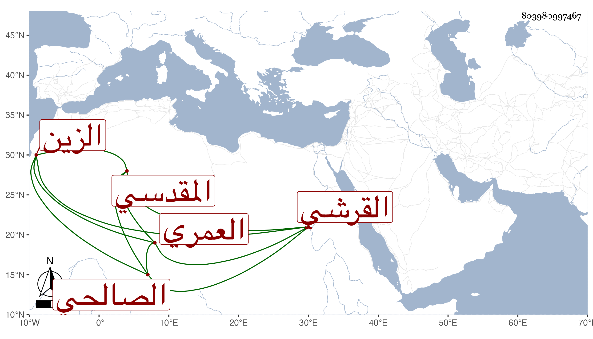

0902Sakhawi.DawLamic.ITO20230111-ara1.EIS1600.803980997467
Biography ID: 803980997467
234
عبد الرحمن بن سليمان بن عبد الرحمن بن العز محمد بن سليمان بن حمزة ابن أحمد بن عمر بن الشيخ أبي عمر الزين القرشي العمري المقدسي الصالحي ، ولد في ذي الحجة سنة احدى وأربعين وسبعمائة وسمع علي عبد الرحمن بن إبراهيم ابن علي والموفق أحمد بن عبد الحميد بن غشم الثاني من حديث عيسى بن حماد زغبة عن الليث وعلى العماد أحمد بن عبد الحميد المقدسي جزء الأزجي ، وحدث سمع منه الفضلاء كابن موسى وشيخنا الموفق الأبي سمع عليه أول الجزءين وقال شيخنا في معجمه : أجاز لي باستدعاء الشريف وليس عنده من المسموع على قدر سنه . مات سنة تسع عشرة بدمشق ، وتبعه المقريزي في عقوده .
